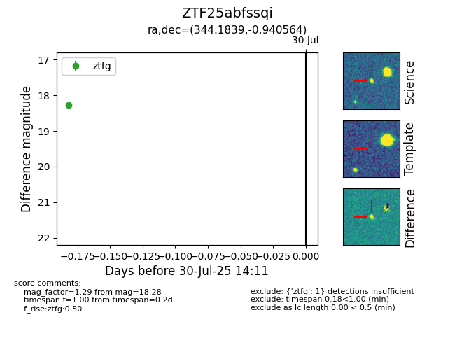

Target ZTF25abfssqi at 2025-07-30 14:11, see:
FINK: fink-portal.org/ZTF25abfssqi
Lasair: lasair-ztf.lsst.ac.uk/objects/ZTF25abfssqi
ALeRCE: alerce.online/object/ZTF25abfssqi
alt names
ZTF25abfssqi (ztf,fink)
coordinates:
equatorial (ra, dec) = (344.1839,-0.94056)
galactic (l, b) = (71.7057,-52.01873)
photometry
last ztfg=18.28
1 ztfg detections
